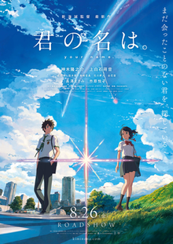

Makoto Shinkai
Makoto Shinkai (新海 誠, Shinkai Makoto), lahir sebagai Makoto Niitsu (新津 誠, Niitsu Makoto, lahir 9 Februari 1973) merupakan seorang sutradara anime dan mantan perancang grafis yang berasal dari Jepang. Shinkai berasal dari Prefektur Nagano. Shinkai mempelajari sastra Jepang di Universitas Chuo dimana dia menjadi anggota dari klub sastra remaja. Dia mewujudkan keinginannya semasa sekolah untuk membuat manga, anime, dan novel. Anime favoritnya adalah Castle in the Sky oleh Hayao Miyazaki. Shinkai sering mendapat sebutan sebagai "Miyazaki Baru", tetapi ia sendiri menyebut perbandingan ini merupakan sesuatu yang berlebihan.
Informasi Tambahan
- Lahir
- Makoto Niitsu
- Tanggal Lahir
- 9 Februari 1973 (umur 51)
- Tempat Lahir
- Koumi, Nagano, Jepang
- Pekerjaan
- Sutradara film, produser, penulis, animator, pengisi suara, seniman manga
Salah Satu Karya Makoto Shinkai
Your Name. (Jepang: 君の名は。; Romaji: Kimi no Na wa; harfiah: "Namamu.") adalah sebuah film anime Jepang produksi tahun 2016 bergenre fantasi yang ditulis dan disutradarai oleh Makoto Shinkai dan diproduksi oleh CoMix Wave Films. Perancangan tokoh film ini dikerjakan oleh Masayoshi Tanaka, dan penciptaan musik dibuat oleh band rock asal Jepang Radwimps. Film ini dibuat berdasarkan novel karya Makoto Shinkai berjudul sama yang dirilis sebulan sebelum pemutaran perdananya tentang seorang siswi di pedesaan Jepang dan seorang siswa di Tokyo yang saling bertukar tubuh. Film ini dibintangi oleh Ryunosuke Kamiki, Mone Kamishiraishi, Masami Nagasawa dan Etsuko Ichihara. Your Name. didistribusikan oleh Toho dan ditayangkan perdana di konvensi Anime Expo 2016 di Los Angeles, California pada 3 Juli 2016, dan kemudian ditayangkan di Jepang pada 26 Agustus 2016. Film ini diputar di Jepang selama satu tahun penuh, tepatnya hingga 25 Agustus 2017. Di Indonesia, film ini ditayangkan di jaringan CGV blitz, Cinemaxx dan Platinum Cineplex mulai 7 Desember 2016.
Film ini mendapat penerimaan luas yang baik daripada kritikus yang memuji film ini untuk animasi dan dampak emosionalnya, serta kesuksesannya secara komersial dengan menjadi film dengan pendapatan kotor keempat terbesar sepanjang waktu di Jepang, film animasi tradisional dengan pendapatan kotor ketujuh terbesar, dan film anime dengan pendapatan kotor terbesar sepanjang waktu di seluruh dunia, dengan total pendapatan mencapai US$355 juta per 30 Juli 2017. Film ini juga menjuarai Festival Film Sitges ke-49, Los Angeles Film Critics Association Awards tahun 2016, dan Mainichi Film Awards ke-71 untuk kategori Film Animasi Terbaik, serta menjadi nominasi dalam Japan Academy Prize ke-40 untuk kategori Animasi Terbaik Tahun Ini.